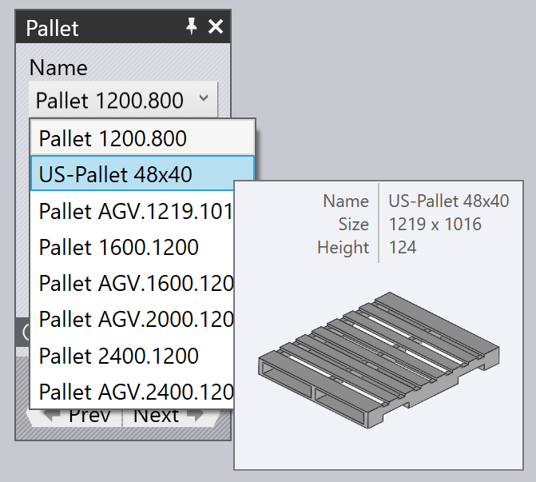

Παραλαβή από παλέτα
Όταν χρησιμοποιείται αναρρόφηση κενού ή μαγνητικό στοιχείο αρπάγης, τα ακατέργαστα τεμάχια (επίπεδα τεμάχια) παραλαμβάνονται από μια παλέτα. Αυτές οι παράμετροι επηρεάζουν αυτήν τη διαδικασία:
-
τη θέση της παλέτας στο κελί του μηχανήματος.
-
τη θέση και τον προσανατολισμό της στοίβας τεμαχίων στην παλέτα.
-
τη θέση και τον προσανατολισμό του στοιχείου αρπάγης αναρρόφησης στο τεμάχιο.
-
τη διαμόρφωση της βεντούζας του στοιχείου αρπάγης (ποιες βεντούζες ενεργοποιούνται/απενεργοποιούνται, και τι είδους βεντούζες είναι τοποθετημένες σε κάθε υποδοχή).
-
τις περιοχές του τεμαχίου που απεικονίζονται από την κάμερα στο ρομπότ και χρησιμοποιούνται ως στοιχεία αναφοράς για τη βαθμονόμηση της θέσης του τεμαχίου.
Οι πίνακες που χρησιμοποιούνται για την επεξεργασία όλων αυτών των ρυθμίσεων προβάλλονται παρακάτω - είναι όλοι διασυνδεδεμένοι με συνδέσμους πλοήγησης προς τα πάνω/κάτω που οδηγούν σε άλλους πίνακες σε μια λογική ακολουθία:
Όπως παρουσιάζεται στην παραπάνω εικόνα, αυτοί οι πίνακες μπορούν επίσης να προσπελαστούν εύκολα κάνοντας απλώς κλικ σε διάφορα αντικείμενα στην προσομοίωση:
-
Για να ανοίξετε τον πίνακα Παλέτα, κάνετε κλικ σε μια παλέτα.
-
Για να επεξεργαστείτε τη στοίβα τεμαχίων σε μια παλέτα (τον πίνακα Παραλαβή), κάνετε κλικ στα ακατέργαστα τεμάχια που βρίσκονται στην παλέτα.
-
Για να επεξεργαστείτε τη θέση του στοιχείου αρπάγης στο ακατέργαστο τεμάχιο (ο πίνακας Στοιχείο αρπάγης), κάνετε κλικ στο στοιχείο αρπάγης.
-
Για να επεξεργαστείτε τη διαμόρφωση της βεντούζας ενός στοιχείου αρπάγης (ο πίνακας Αναρρόφηση), κάνετε κλικ σε μια από τις βεντούζες.
-
Για να επεξεργαστείτε τις θέσεις απεικόνισης (που χρησιμοποιούνται από το σύστημα αναγνώρισης θέσης ακριβείας), κάνετε κλικ στην κάμερα.
Πίνακας παλετών
Ο πίνακας Παλέτα χρησιμοποιείται για την επιλογή μιας παλέτας και την τοποθέτησή της στο κελί. Εσείς μπορεί να ανοίξετε αυτόν τον πίνακα κάνοντας απλώς κλικ σε μια παλέτα. Το Flux θα τοποθετήσει επίσης το χρονοδιάγραμμα προσομοίωσης έτσι ώστε το ρομπότ να είναι τοποθετημένο στο σημείο παραλαβής του τεμαχίου από την παλέτα.

-
Χρησιμοποιήστε την επιλογή Όνομα για να επιλέξετε μια διαφορετική παλέτα. Κανονικά παρατίθενται μόνο οι παλέτες που μπορούν να χρησιμοποιηθούν για αυτό το ακατέργαστο τεμάχιο, αλλά μπορείτε να απενεργοποιήσετε τον έλεγχο Φιλτραρισμένο στη κατόπιν αυτού παρατίθενται όλες οι διαθέσιμες παλέτες.
-
με μετακίνηση του ποντικιού πάνω από ένα όνομα στη λίστα ονομάτων εμφανίζεται μια γρήγορη περίληψη της συγκεκριμένης παλέτας, μαζί με μια μικρογραφία:
 -
Χρησιμοποιήστε τις καταχωρίσεις Θέση για να τοποθετήσετε την παλέτα στον άξονα Z και στον άξονα X (σε συντεταγμένες κελιού) και χρησιμοποιήστε την καταχώριση Γωνία για να περιστρέψετε την παλέτα. Καθώς μετακινείτε ή περιστρέφετε την παλέτα, το τεμάχιο στοιβάζεται στην παλέτα και το στοιχείο αρπάγης/ρομπότ ακολουθούν την κίνηση.
-
Χρησιμοποιήστε τα κουμπιά Πίσω και Συνέχεια για να περιηγηθείτε στις άλλες παλέτες στο κελί, για παράδειγμα, η παλέτα με τις εργασίες απόθεσης τεμαχίων.
-
Χρησιμοποιήστε το κουμπί πλοήγησης Υποδοχή για να επεξεργαστείτε τη θέση της στοίβας τεμαχίων στην παλέτα.
-
Χρησιμοποιήστε το κουμπί Διαμόρφ. μνήμης κουμπί κάτω από το τμήμα Προηγμένα για να αποθηκεύσετε αυτήν τη διαμόρφωση κελιού (συμπεριλαμβανομένων όλων των παλετών) ως προεπιλογή για αυτό το μηχάνημα.
Πίνακας παραλαβής
Ο πίνακας Παραλαβή χρησιμοποιείται για την επεξεργασία της θέσης της στοίβας τεμαχίων στην παλέτα. Μπορείτε να ανοίξετε απευθείας αυτόν τον πίνακα κάνοντας κλικ στη στοίβα ακατέργαστων τεμαχίων που βρίσκεται στην παλέτα. (Μπορείτε επίσης να αποκτήσετε πρόσβαση σε αυτόν χρησιμοποιώντας το σύνδεσμο Υποδοχή από τον πίνακα Παλέτα).

-
Χρησιμοποιήστε τις καταχωρίσεις Θέση για να τοποθετήσετε τη στοίβα στην παλέτα. Αυτές οι συντεταγμένες καθορίζουν το κέντρο του τεμαχίου στους άξονες Z και X σχετικά με τη γωνία της παλέτας και βρίσκονται στον τοπικό χώρο συντεταγμένων της παλέτας.
-
Χρησιμοποιήστε την καταχώριση Γωνία για να γυρίσετε το τεμάχιο στην παλέτα.
-
Χρησιμοποιήστε το διακόπτη Αναστροφή τεμαχίου για να αναποδογυρίσετε το τεμάχιο. Λάβετε υπόψη ότι αυτό συνήθως συνεπάγεται ότι θα απαιτηθεί μια εργασία εκ νέου σύλληψης πριν από την επεξεργασία της πρώτης κάμψη (αυτό θα προστεθεί από το TecZone Bend αυτόματα).
-
Χρησιμοποιήστε το σύνδεσμο Κάμερα… για να μεταβείτε στον πίνακα Κάμερα, όπου μπορείτε ρυθμίστε τη φάση αναγνώρισης εικόνας της παραλαβής.
-
Ο σύνδεσμος Σημεία στήριξης… εμφανίζει τον επεξεργαστή Σημείων πορείας όπου μπορείτε να ρυθμίσετε με ακρίβεια την τροχιά του ρομπότ κατά την παραλαβή.
-
Ο σύνδεσμος Σταθμός ανασυγκρ. εμφανίζει τον πίνακα Σταθμός εκ νέου σύλληψης όπου μπορείτε να διαμορφώσετε τη θέση του σταθμού εκ νέου σύλληψης κατά τη λειτουργία παραλαβής.
Καθώς το τεμάχιο μετακινείται στην παλέτα, το στοιχείο αρπάγης παραμένει κολλημένο στο τεμάχιο και το ρομπότ ακολουθεί τις κινήσεις.
Πίνακας στοιχείου αρπάγης
Ο πίνακας Στοιχείο αρπάγης χρησιμοποιείται για την επιλογή ενός διαφορετικούς στοιχείου αρπάγης ή για την αλλαγή της θέσης και του προσανατολισμού όπου το στοιχείο αρπάγης παραλαμβάνει το τεμάχιο.

-
Χρησιμοποιήστε την επιλογή Όνομα για να επιλέξετε ένα διαφορετικό στοιχείο αρπάγης. Κανονικά, εμφανίζονται μόνο τα στοιχεία αρπάγης που είναι κατάλληλα για αυτό το τεμάχιο (με βάση το μέγεθος του στοιχείου αρπάγης και το ωφέλιμο φορτίο), αλλά μπορείτε να απενεργοποιήσετε τον έλεγχο Φιλτραρισμένο και στη συνέχεια να εμφανιστούν όλα τα στοιχεία αρπάγης.
-
Με μετακίνηση του ποντικιού επάνω από ένα όνομα στη λίστα στοιχείων αρπάγης προβάλλεται μια περίληψη αυτού του στοιχείου αρπάγης μαζί με μια μικρογραφία:

-
Χρησιμοποιήστε τις καταχωρίσεις Θέση για να μετακινήσετε το κέντρο του στοιχείου αρπάγης σε σχέση με το κέντρο του τεμαχίου και χρησιμοποιήστε την καταχώριση Γωνία για να περιστρέψετε το στοιχείο αρπάγης σε σχέση με τον προσανατολισμό του τεμαχίου.
-
Χρησιμοποιήστε το σύνδεσμο Βεντούζα για να μεταβείτε σε μια επεξεργασία ακριβείας του στοιχείου αρπάγης (επιλογή διαφορετικών βεντουζών, ενεργοποίηση/απενεργοποίηση βεντουζών).
-
Το κουμπί Επιλογή επιφάνειας συγκράτησης μπορεί να χρησιμοποιηθεί για την τοποθέτηση του στοιχείου αρπάγης σε διαφορετικό επίπεδο. Κανονικά, το μέγιστο επίπεδο στο μοντέλο χρησιμοποιείται για την τοποθέτηση του στοιχείου αρπάγης. Εάν θέλετε να το αλλάξετε, κάνετε κλικ σε αυτό το κουμπί. Στη συνέχεια, κάνετε κλικ στο επίπεδο όπου πρέπει να τοποθετηθεί το στοιχείο αρπάγης:

-
Το κουμπί Χρήση λαβίδων χρησιμοποιείται για την εναλλαγή αυτού του τεμαχίου στη χρήση του διανομέα τεμαχίων και του στοιχείου αρπάγης με σιαγόνες (μηχανικό στοιχείο αρπάγης). Όλα τα στάδια του κύκλου κάμψης από την παραλαβή έως την απόθεση υπολογίζονται εκ νέου χρησιμοποιώντας τη σιαγόνα gripper[1].
Προειδοποιήσεις αναρρόφησης
Εάν το στοιχείο αρπάγης μετακινηθεί έτσι ώστε ορισμένες από τις βεντούζες να βρίσκονται εκτός της μεταλλικής πλάκας ή τοποθετούνται επάνω από οπές του τεμαχίου, οι βεντούζες επισημαίνονται και εμφανίζεται ένα σφάλμα στη
*στήλη * παραλαβής του πλοηγού, όπως παρουσιάζεται στην παρακάτω εικόνα:

Μενού ενεργειών

Το κουμπί Ενέργειες χρησιμοποιείται για την εμφάνιση ενός μενού που παρέχει ορισμένες χρήσιμες ενέργειες στο στοιχείο αρπάγης:
-
Auto-Shift Προσπαθεί να επανατοποθετήσει το στοιχείο αρπάγης επάνω από το τεμάχιο διασφαλίζοντας ότι όλες οι βεντούζες βρίσκονται εντός του τεμαχίου και όχι επάνω από κάποιες οπές (αν είναι δυνατόν).
-
Απενεργοποίηση μη στεγανών βεντουζών: Απενεργοποιεί όλες τις βεντούζες που βρίσκονται επάνω από οπές ή βρίσκονται εκτός των ορίων του part[2].
-
Ενεργοποίηση όλων των βεντουζών: Ενεργοποιεί όλες τις βεντούζες που είναι απενεργοποιημένες.
-
Διαμόρφ. μνήμης: Εάν διαμορφώσετε το στοιχείο αρπάγης απενεργοποιώντας ή αφαιρώντας ορισμένες βεντούζες ή τροποποιώντας τα μήκη ή τις γωνίες του βραχίονα (για πολλαπλές αρπάγες (MultiGripper) που μπορούν να αλλάξουν σχήμα), μπορείτε να αποθηκεύσετε την τροποποιημένη διαμόρφωση του στοιχείου αρπάγης με νέο όνομα για εύκολη επαναχρησιμοποίηση.
-
Εξαγωγή στοιχείου αρπάγης: Αποθήκευση του τρέχοντος στοιχείου αρπάγης ως αρχείο .fxbgrip που μπορεί να εισαχθεί σε άλλη εγκατάσταση του TecZone Bend. Αυτό είναι χρήσιμο εάν έχετε εισαγάγει ένα προσαρμοσμένο στοιχείο αρπάγης και πρέπει να το μοιραστείτε με άλλες εγκαταστάσεις.
Πίνακας αναρρόφησης
Ο πίνακας Αναρρόφηση χρησιμοποιείται για τη διαμόρφωση της διάταξης των βεντουζών ενός στοιχείου αρπάγης. Μπορείτε να ανοίξετε αυτόν τον πίνακα κάνοντας κλικ απευθείας σε μια βεντούζα ή επιλέγοντας το σύνδεσμο Αναρρόφηση από τον πίνακα στοιχείων αρπάγης.

-
Χρησιμοποιήστε την επιλογή Βεντούζα # για να επιλέξετε μια συγκεκριμένη βεντούζα στο στοιχείο αρπάγης ή χρησιμοποιήστε τα κουμπιά Πίσω και Συνέχεια για να πλοηγηθείτε στις βεντούζες. Η επιλεγμένη βεντούζα επισημαίνεται με μπλε χρώμα και μπορεί να υποβληθεί σε επεξεργασία.
-
Για κάθε βεντούζα, μπορείτε να ορίσετε τις επιλογές Κατάσταση Ενεργοποίηση, Απενεργοποίηση ή Αφαίρεση. Ανατρέξτε στην παρακάτω περιγραφή για περισσότερες σχετικές λεπτομέρειες.
-
Χρησιμοποιήστε τον πίνακα Τύπος για να μεταβείτε σε διαφορετικό τύπο βεντούζας. Συνήθως, αλλάζετε όλες τις βεντούζες σε ένα στοιχείο αρπάγης στο νέο τύπο, αλλά μπορείτε επίσης αναμείξτε και ταιριάξτε τις βεντούζες απενεργοποιώντας το κουμπί Αλλαγή όλων και στη συνέχεια αλλάζοντας τις βεντούζες. (Σημειώστε ότι όταν το κάνετε αυτό, η επιλογή των βεντουζών θα περιοριστεί, δεδομένου ότι όλες οι βεντούζες που είναι τοποθετημένες σε ένα πλαίσιο στοιχείου αρπάγης πρέπει να έχουν ίδιο ύψος εργασίας). Η παραπάνω εικόνα παρουσιάζει δύο από τις βεντούζες που αντικαταστάθηκαν με μικρότερες (SAXM50, αντί της προεπιλεγμένης SAXM80).
-
Χρησιμοποιήστε το κουμπί Μηδενισμός για να επαναφέρετε το στοιχείο αρπάγης στην αρχική του κατάσταση - όλες οι βεντούζες είναι ενεργοποιημένες και επαναφέρονται στο προεπιλεγμένο τύπο βεντούζας που έχει οριστεί στο στοιχείο αρπάγης.
Η προεπιλεγμένη κατάσταση για μια βεντούζα είναι Ενεργή, γεγονός που συνεπάγεται ότι οι βεντούζες είναι συνδεδεμένες με τη γραμμή κενού και συμβάλλει στην ανύψωση.
Εάν μια βεντούζα βρίσκεται επάνω από μια οπή στο τεμάχιο, μπορείτε να αλλάξετε την κατάσταση σε Ανενεργή που συνεπάγεται ότι δεν υπάρχει κενό. (Έτσι περιορίζεται η ανύψωση του στοιχείου αρπάγης και αλλάζει το κέντρο ανύψωσης, το οποίο το Flux λαμβάνει υπόψη για να διεξάγει ελέγχους φέρουσας ικανότητας του στοιχείου αρπάγης). Λάβετε υπόψη ότι η βεντούζα εξακολουθεί να είναι τοποθετημένη στο πλαίσιο και συμμετέχει σε ελέγχους σύγκρουσης. Το Flux προβάλλει τις απενεργοποιημένες βεντούζες ως πλαίσια σχεδίασης, όπως μπορείτε να δείτε με δύο από τις βεντούζες στην παραπάνω εικόνα.
Τέλος, μπορείτε να ορίσετε μια βεντούζα στην επιλογή Αφαιρέθηκε, γεγονός που συνεπάγεται ότι η βεντούζα έχει αφαιρεθεί από το πλαίσιο στο πραγματικό μηχάνημα. Δεν υπάρχει ανύψωση από αυτήν τη βεντούζα και αυτή δεν θα προκαλέσει σύγκρουση. Αυτό είναι μερικές φορές χρήσιμο εάν μια βεντούζα πέφτει επάνω από μια διαμορφωμένη περιοχή ή προκαλεί σύγκρουση με τη μήτρα ή το τραπέζι της μηχανής κατά τη λειτουργία.
Πίνακας κάμερας
Η διαδικασία παραλαβής απαιτεί τη λήψη μίας ή περισσότερων εικόνων από την κάμερα και ένα σύστημα επεξεργασίας εικόνας που χρησιμοποιεί αυτές τις εικόνες για να εκτιμήσει ακριβώς πού βρίσκεται το τεμάχιο στην παλέτα. Με κλικ στην κάμερα που είναι εγκαταστημένη στο ρομπότ ή επιλογή του κουμπιού πλοήγησης Κάμερα από τον πίνακα Παραλαβή ανοίγει ο πίνακας Κάμερα. Το Flux τοποθετεί επίσης την προσομοίωση κατά τρόπον που το ρομπότ βρίσκεται στη θέση που απαιτείται για τη λήψη της εικόνας:

-
Χρησιμοποιήστε τη λίστα Δείκτης (ή τα κουμπιά Πίσω και Συνέχεια) για να περιηγηθείτε στις διάφορες εικόνες αναγνώρισης ακριβείας που χρησιμοποιούνται για αυτό το τεμάχιο. Καθώς το κάνετε αυτό, το Flux εμφανίζει ένα πορτοκαλί περίγραμμα που προβάλλει τη ζώνη αναγνώρισης εικόνας στο τεμάχιο (βλ. παραπάνω εικόνα).
-
Χρησιμοποιήστε τις καταχωρίσεις Θέση για να επανατοποθετήσετε τη ζώνη στον άξονα Z και στον άξονα X για να βελτιώσετε τη συμπερίληψη ορισμένων σημείων ενδιαφέροντος που μπορούν να βελτιώσουν την ακρίβεια αναγνώρισης (γωνίες, μικρές οπές, εγκοπές).
-
Χρησιμοποιήστε το κουμπί Προσθήκη για να προσθέσετε μια πρόσθετη εικόνα αναγνώρισης (έως 4) και χρησιμοποιήστε το κουμπί Αφαίρεση για να αφαιρέσετε την τρέχουσα εικόνα αναγνώρισης. Κατά τη διάρκεια της προσομοίωσης της παραλαβής του τεμαχίου, το Flux εμφανίζει το ρομπότ να μετακινείται σε καθεμιά από αυτές τις περιοχές αναγνώρισης με την κάμερα στραμμένη προς τα κάτω και να σταματά για τη λήψη της εικόνας.
Εάν είναι ενεργοποιημένος ο διακόπτης Χρήση φωτιζόμενης τράπεζας, τότε το τεμάχιο μεταφέρεται σε ένα φωτιζόμενο τραπέζι προτού χρησιμοποιηθεί η κάμερα για την απεικόνισή του. Αυτό αυξάνει την αντίθεση και είναι χρήσιμο για εξαιρετικά ανακλαστικά τεμάχια. Το TecZone Bend προσθέτει το τραπέζι με οπίσθιο φωτισμό και το τοποθετεί αυτόματα κοντά στην παλέτα παραλαβής, αλλά μπορείτε στη συνέχεια να διαμορφώσετε τη θέση κάνοντας κλικ σε αυτό: